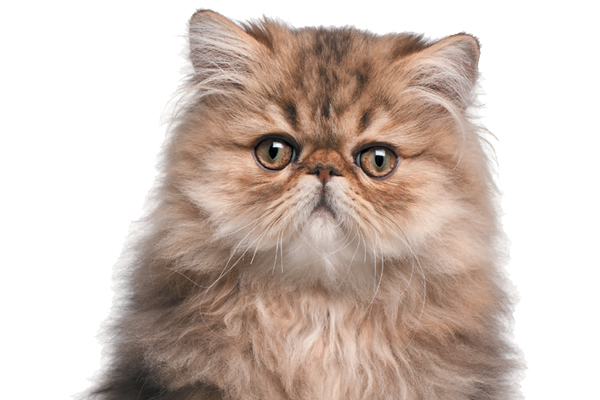

Persian Cat

The Persian cat is a long-haired breed of cat characterized by its round face and short muzzle. It is also known as the "Persian Longhair" in the English-speaking countries. The first documented ancestors of the Persian were imported into Italy from Iran (historically known as Persia in the west) around 1620. Recognized by the cat fancy since the late 19th century, it was developed first by the English, and then mainly by American breeders after the Second World War. Some cat fancier organizations' breed standards subsume the Himalayan and Exotic Shorthair as variants of this breed, while others treat them as separate breeds.